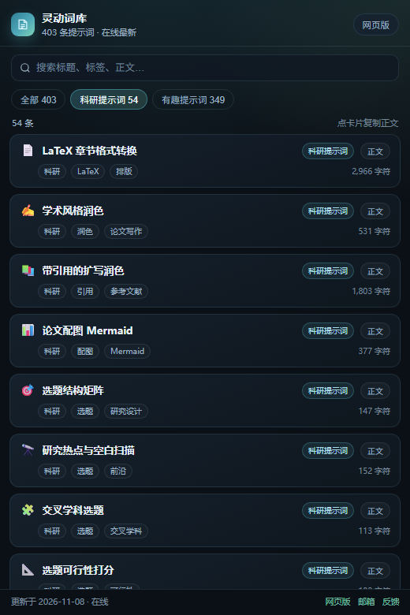

BROWSER EXTENSION
装好后点一下浏览器右上角的图标，会弹出一个小窗，按分类列出全部提示词； 点任意一条，整段提示词正文就直接进剪贴板，切到 ChatGPT / Claude 粘贴即用。

点击上面的「下载插件（.zip）」按钮，把压缩包解压到任意固定位置（解压后能看到 manifest.json 就对了）。
Chrome / Edge 地址栏输入 chrome://extensions（Edge 是 edge://extensions），打开右上角「开发者模式」。
点「加载已解压的扩展程序」，选中刚才解压出来的那个文件夹（里面有 manifest.json 的那层）。装好后点工具栏上的「灵动词库」图标即可打开小窗。
插件优先读取线上最新词库；断网或站点临时不可用时自动退回安装包内置的快照，功能和文案照常可用。 更新词库后，重新下载新包、在扩展管理页点「重新加载」即可。
整段提示词正文进剪贴板，附带「已复制」提示；需要先核对内容时点「正文」展开原文。
搜索会同时命中标题、摘要、标签和提示词正文；分类与条数实时切换。
每次打开小窗都会先拉线上最新 prompts.json，失败才用内置快照，不会卡在旧数据上。